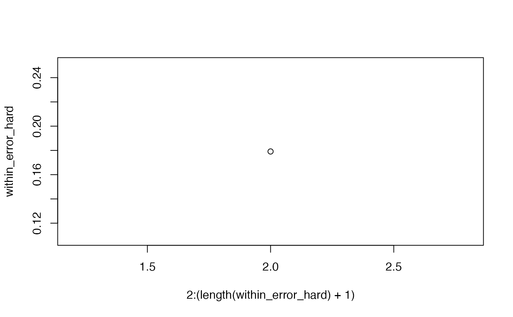
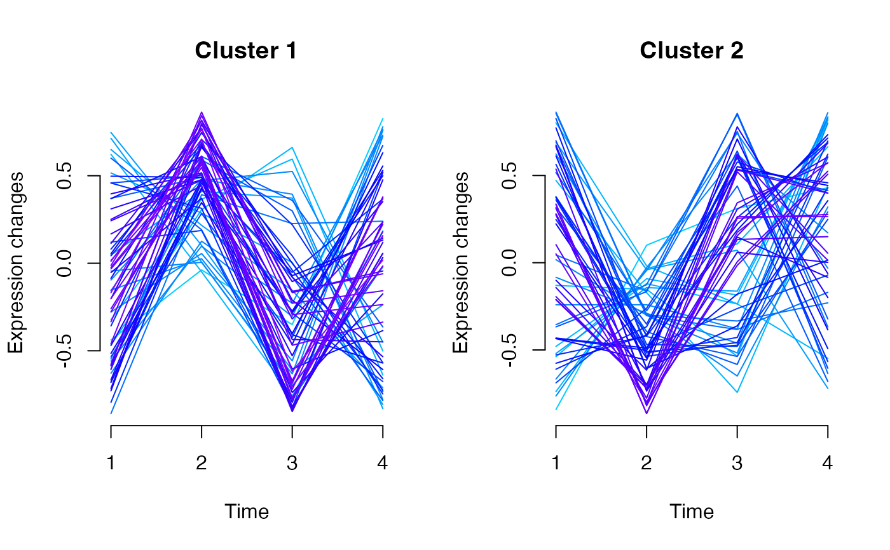

A function to explore a dataset and cluster its rows.
Source:R/omics_array.R
clustInference-omics_array-numeric-method.RdBased on soft clustering performed by the Mfuzz package.
Usage
# S4 method for class 'omics_array,numeric'
clustInference(omicsarray, vote.index, new.window = FALSE)Value
A list of two elements:
- res.matrix
A data.frame of nrows(omicsarray) observations of 3 variables (name, cluster, maj.vote.index).
- prop.matrix
Additionnal info.
Examples
library(Patterns)
if(require(CascadeData)){
data(micro_S, package="CascadeData")
D<-Patterns::as.omics_array(micro_S[1:20,],1:4,6)
b<-Patterns::clustInference(D,0.5)
b
}


#> [[1]]
#> name cluster maj.vote.index
#> 1 1007_s_at 2 4
#> 2 1053_at 1 5
#> 3 117_at 1 3
#> 4 121_at 2 4
#> 5 1255_g_at 1 4
#> 6 1294_at 2 5
#> 7 1316_at 1 3
#> 8 1320_at 2 4
#> 9 1405_i_at 1 4
#> 10 1431_at 1 3
#> 11 1438_at 1 3
#> 12 1487_at 1 5
#> 13 1494_f_at 1 3
#> 14 1598_g_at 2 5
#> 15 160020_at 2 4
#> 16 1729_at 1 3
#> 17 1773_at 1 3
#> 18 177_at 1 3
#> 19 179_at 2 4
#> 20 1861_at 1 3
#>
#> $prop.matrix
#> [,1] [,2] [,3] [,4] [,5] [,6]
#> [1,] 0.3193294 0.5287150 0.6856151 0.5452441 0.4705348 0.6653946
#> [2,] 0.3201012 0.5197398 0.5102051 0.5886610 0.5638643 0.6024186
#> [3,] 0.5495034 0.2965164 0.2539676 0.6124642 0.7279132 0.3632076
#> [4,] 0.4644560 0.7192665 0.7235228 0.5411109 0.4964824 0.5116917
#> [5,] 0.7275891 0.6435677 0.5600504 0.6243525 0.3570864 0.4754711
#> [6,] 0.6029991 0.6712111 0.6720950 0.3800701 0.5836804 0.6431925
#> [7,] 0.4927218 0.6787416 0.3498004 0.2723999 0.5232321 0.6258894
#> [8,] 0.6405539 0.6700095 0.6324503 0.3652602 0.3171563 0.6648801
#> [9,] 0.5244993 0.6289174 0.4061349 0.6227387 0.5974469 0.2919158
#> [10,] 0.5141071 0.2675075 0.3310129 0.7068222 0.7031021 0.3211859
#> [11,] 0.2749935 0.5648712 0.2958517 0.4637204 0.7167257 0.6491810
#> [12,] 0.7010877 0.6982070 0.6450532 0.5835362 0.4552519 0.6334515
#> [13,] 0.4567342 0.5757529 0.3207141 0.3741819 0.5817900 0.5597696
#> [14,] 0.6323691 0.5691988 0.6930192 0.4225862 0.5518229 0.7360917
#> [15,] 0.7209545 0.7310094 0.6101689 0.3812343 0.2852238 0.5541901
#> [16,] 0.4171105 0.3799469 0.6497291 0.7053627 0.4576776 0.5092749
#> [17,] 0.3815100 0.5505745 0.3132965 0.4518337 0.5491102 0.7101709
#> [18,] 0.3855389 0.6447390 0.2394465 0.4781206 0.5573714 0.6669312
#> [19,] 0.5839155 0.6094399 0.6982974 0.3273969 0.7258814 0.2780020
#> [20,] 0.6079917 0.3720503 0.4477781 0.5870030 0.7079705 0.4679166
#>